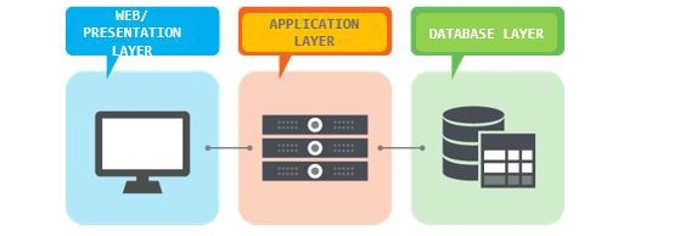

{kind=link}
Webová aplikace je aplikace poskytovaná uživatelům z webového serveru přes internet nebo jinou vnitropodnikovou sít’ (intranet). Díky pokročilým webovým technologiím je možné realizovat webovým prostředím stále složitější a komplexnější aplikace, včetně informačních systémů, cloudových služeb apod.
Typy webových aplikací
Vícevrstvé webové aplikace
-
Díky pokročilým webovým technologiím je možné realizovat webovým prostředím stále složitější
a
komplexnější aplikace, včetně informačních systémů, cloudových služeb apod.
Současné webové aplikace jsou strukturovány do více vrstev, tradičně se uvádějí tři základní
vrstvy:
- Funkci prezentační vrstvy plní zpravidla webový prohlížeč.
- Logickou vrstvu představují technologie na dynamické generování webových stránek (PHP, ASP.NET, JSP apod.), jež se nejčastěji zpracovávají na straně webového serveru.
- Datovou vrstvu mohou tvořit databáze umístěné na databázovém serveru, ale zdrojem dat mohou být také datové soubory nebo internetové služby.
-

- API (Application Programming Interface) označuje v informatice rozhraní pro programováníaplikací.
- Jde o komplex procedur, funkcí, tříd či protokolů nějaké knihovny, které může programátor využívat. API určuje, jakým způsobem jsou funkce knihovny volány ze zdrojového kódu programu.
- V programátorské praxi se můžeme setkat s celou řadou API - například s API operačních systémů (unixové systémy používají standard POSIX, OS od Microsoftu zase Windows API), grafickými API (OpenGL, DirectX, Vulkan) nebo s API databázových a informačních systémů. API se nyní hojně využívá při vývoji mobilních i webových aplikací a tvorbě internetových stránek.
- Smyslem webových API je zajištění komunikace mezi dvěma platformami, které si vzájemně vyměňují data. Umožňují využívat již naprogramovaná řešení a integrovat je do vlastních webů.
- V praxi se s integrací aplikačního rozhraní setkáváme třeba na stránkách zobrazujících polohu obchodu na Google mapách. V takovém případě je využito API z Google Map, které volají vrstvu kódu, jež zobrazuje požadovaná data. Další populární webová API:
- YouTube API – umožňují vývojářům integrovat videa a další funkcionalitu této populární multimediální platformy. Rozhraní lze tedy využít například pro zobrazení streamů na webu nebo pro vložení playlistu.
- Flickr API – nabízí přístup k databázi této populární sociální sítě na sdílení fotografií.
- Twitter API – pro sdílení tweetů nebo využití dat z vyhledávání.
- Amazon API umožňují na webu zobrazovat produkty nabízené na stránkách Amazonu. Mohou tak být využity jako prostředek pro zpeněžení (monetizaci) stránek.
- WebSocket je nezávislý počítačový komunikační protokol, poskytující plně duplexní (obousměrný) komunikační kanál přes jediné TCP připojení.
- Je navržen tak, aby mohl být prováděn ve webových prohlížečích a na webových serverech, ale může být použita jakákoliv klientská a serverová aplikace.
- Jeho jediný vztah k HTTP je, že jeho handshake (navázání spojení) je interpretováno HTTP servery jako požadavek na upgrade.
- Umožňuje interakci mezi prohlížečem a webovým serverem s nižší režií, usnadňuje real-time přenos dat.
- Využívá se pro vytváření aplikací v reálném čase, jako jsou online chaty, kooperativní služby (např. sdílená tabule, videokonference), online hry apod.
- V současné době je podporován většinou hlavních prohlížečů, vyžaduje však podporu také na straně serveru.
- Nejčastěji se k vývoji těchto aplikací používá Javascriptová knihovna Socket.IO, kterou tvoří klientská část a serverová část určená pro Node.js. Obě tyto komponenty mají identické API.
- Aplikace využívající Socket.IO jsou založeny nejčastěji na vysílání (socket.emit) a přijímání (socket.on) zpráv mezi klienty, kteří jsou prostřednictvím socketů připojeni k serveru.
- Architektura moderních webových aplikací velmi často vychází z návrhového vzoru (design pattern), označovaného zkratkou MVC (představuje první písmena slov model, view, controller).
- Základní myšlenkou MVC architektury je oddělení aplikační logiky od výstupu. Snaží se vyřešit problém tzv. "spaghetti" kódu, typickém zejména pro starší webové aplikace psané v jazyce PHP. Udržování a rozšiřování takových aplikací je velmi náročné, obtížná je i týmová spolupráce. V pojetí MVC je aplikace přehledně rozdělena na komponenty tří typů:
- Model obsahuje logiku aplikace, k níž můžeme zařadit výpočty, databázové dotazy, validace a podobně. Jeho úkolem je podle zadaných parametrů zpracovat určitá vstupní data a připravit z nich data výstupní. Nerozhoduje o tom, jak bude se výstupními daty nakonec naloženo, jak budou zformátována a vypsána; model je zcela oddělen od výstupu.
- View (pohled) má na starost zobrazení výstupu dat, která mu byla předána. Může jít o pohled v podobě výpisu dat (sestavy), ale také o pohled s formulářem. Nejčastěji se k tvorbě pohledů používají tzv. šablonovací systémy, které umožňují do šablony, jejíž rámec tvoří HTML stránka, vkládat do symbolických bloků proměnné i různé příkazy. Šablony se mohou vzájemně kombinovat a doplňovat - může např. existovat určitá výchozí šablona s layoutem stránek, kterou využívají a doplňují další šablony.
- Controller zprostředkovává komunikaci mezi klientem, modelem a pohledem. Každá entita mívá svůj vlastní controller - UserController, ArticleController atd. Životní cyklus stránky zahajuje uživatel, který zadá do prohlížeče adresu webu a parametry: http://www.server.com/article/detail/5 Požadavek zpracuje neprve router, který podle zadaných parametrů zajistí jeho přesměrování na správný router. V tomto případě bude volán ArticleController a budou mu předány parametry view a 5. Controller na základě parametrů provede příslušné akce: zavolá model, jehož úkolem je v databázi najít článek s id 5, a získaná data poté controller předá pohledu (view) s názvem detail. Data jsou vložena na určené místo v šabloně a pohled je vyrenderován.
- Django je open source webový aplikační framework napsaný v Pythonu, který byl pojmenován po jazzovém kytaristovi Django Reinhardtovi.
- Hlavní úkol Djanga je snadné vytvoření komplexních, databází řízených webových aplikací.
- Zaměřuje se na znovupoužitelnost, propojitelnost komponent a rychlý vývoj v duchu „DRY“ (Don’t Repeat Yourself – "neopakuj sám sebe").
- Django vychází z architektury MVC (Model-View-Controller), jež je v tomto případě modifikována do podoby MVT (Model-View-Template).
- Centrálním řídicím prvek aplikace je totiž systém zobrazení (View), který operace s daty řeší ve spolupráci s modelem a samotné zobrazení stránek zajišťují tzv. šablony (templates) s podporou šablonovacího systému.
- Datový model je definován pomocí tříd v Pythonu a prostřednictvím objektově relačního mapování (ORM) může být fyzicky realizován v různých relační databázových systémech. K specifickým rysům Djanga patří možnost automatické tvorby administrace projektu, která je generována dynamicky podle datového modelu. Framwork navíc nabízí:
- Odlehčený, samostatný webový server pro vývoj a testování.
- Serializační a validační systém pro formuláře, který automaticky překládá data mezi formulářem HTML a hodnotami vyhovujícími databázi.
- Cachovací framework, který nabízí několik různých metod cachování. Podporu tříd, které mohou zasáhnout v různých stádiích vyřizování požadavku a provést vlastní funkce.
- Vnitřní komunikační systém pro komunikaci mezi komponentami pomocí předem dohodnutých signálů.
- Možnost překladu všech komponent do libovolného jazyku. Serializační systém, který může produkovat nebo číst reprezentaci XML a/nebo JSON instancí modelu Django.
- Systém rozšiřujících schopností šablonovacího enginu.
- Projekt je chápán jako nejvyšší úroveň v Djangu a může být vytvořen z příkazové řádky příkazem: python django-admin.py startproject (název projektu). Součástí projektu může být jedna nebo více aplikací. Každá aplikace musí být zaregistrována v konfiguračním souboru settings.py, který je společný všem aplikacím v Djangu. Součástí konfiguračního souboru je mimo jiné nastavení připojení k databázi a připojení k SMTP serveru pro snadné posílání emailů, konfigurace tzv. middleware (komponenty, které v aplikaci zajišťují určité speciální služby - např. autentizaci nebo zabezpečení), nastavení časového pásma, registrace aplikací do projektu nebo deklarace důležitých konstant. Projekt i jednotlivé aplikace je možné spravovat pomocí skriptu manage.py. Mezi jeho základní úlohy patří vytvoření základní struktury nové aplikace (python manage.py startapp), vytvoření databázového schématu a provedení tzv. migrací (python manage.py makemigrations, python manage.py migrate) nebo spouštění testovacího webového serveru (python manage.py runserver). Soubory pojmenované urls.py mají na starost směrování požadavků na jednotlivé view, které se nacházejí v souboru views.py. Soubory models.py obsahují modely pro danou aplikaci. Šablony pro zobrazení stránek mají strukturu souborů HTML obohacených o instrukce (makra) šablonovacího systému. Jsou uloženy ve složce templates. Samotný šablonovací systém je velice flexibilní a nabízí vytváření vlastních rozšíření i využití dědičnosti šablon. Ta umožňuje v potomkovi předefinovat či rozšířit sekce definované v předkovi: {% block nazev_sekce %}…{% endblock %}
{kind=link}
Webová API
Aplikace s využitím WebSocket
MVC (Model-View-Controller)
Django framework
{kind=link}
{kind=link}
MVC model
Django aplikace
Fáze návrhu webové aplikace
- Strategie: Hledání kompromisu mezi potřebami uživatelů budoucí aplikace a zájmů tvůrců aplikace. Je třeba zjistit a pochopit cílovou skupinu uživatelů, jejich způsob uvažování a zvyky, zohlednit je v návrhu aplikace.
- Specifikace požadavků: Na základě získaných informací jsou specifikovány všechny funkce a možnosti, jež by měla aplikace a její GUI pokrývat. Výsledkem by měl být dokument s popisem požadovaných funkcí a forem obsahu
- Návrh struktury: V této fázi se řeší tzv. interakční design; pomocí Use Case diagramů (případu užití) se zobrazují vazby mezi jednotlivými částmi aplikace a akce, které bude uživatel moci provádět, včetně možných reakcí aplikace
- Základní model a kostra: V této fázi se řeší tzv. informační design (jak prezentovat informace generované aplikací, aby došlo k jejich správnému pochopení), interface design (výběru jednotlivých druhů GUI komponent k provedení určité činnosti) a design navigace (jak se budou v prostředí aplikace pohybovat uživatelé). Celkový pohled lze získat sdružením poznatků a vytvořit drátěný model uživatelského rozhraní - wireframe. Jeho cílem je určit hlavní části aplikace a ilustrovat jejich přibližné rozmístění (schématické obrázky, v nichž jsou potlačeny detaily vzhledu GUI komponent i obsahu).
- Vizuální vzhled: Webdesignéři připravují vizuální vzhled jednotlivých komponent stránky podle vytvořených wireframů a storyboardů. Na základě grafického manuálu vznikají barevná schémata, která budou v aplikaci použita, jsou vybírány typy písem a vytvářen graficky homogenní vzhled všech komponent.
- Testování: Může probíhat v uzavřené skupině i v testovacím provozu aplikace pomocí speciálních analytických nástrojů pro web (analýzy návštěvnosti, teplotní mapy, sledování pohybů myši a kliknutí, nahrávání uživatelské aktivity atd.).
{kind=link}
Bezpečnostní rizika webových aplikací
- Cross-site scripting (XSS) je metoda narušení WWW stránek využitím bezpečnostních chyb ve skriptech (především neošetřené vstupy).
- Útočník díky těmto chybám v zabezpečení webové aplikace dokáže do stránek podstrčit svůj vlastní javascriptový kód.
- Obrana:
V textech zadávaných uživateli je třeba speciální znaky nahrazovat entitami, např.
< nahrazovat za <, v java aplikacích nejlépe pomocí značky
- Cross-site request forgery )XSRF) je pasivní útok, kdy útočník nachystá na nějakou stránku kód, ,který způsobí vyvolání URL na nějakém jiném serveru, kde uživatel může být stále přihlášen.
- Obrana: Důležité akce je třeba potvrzovat, do přihlašovacích formulářů je třeba přidávat náhodně generované hodnoty. V administrační části internetových aplikací, se doporučuje zásadně používat HTTP metodu POST. Používat autorizační token – náhodně vygenerovaný řetězec pro danou akci a pro aktuálního uživatele.
- Clickjacking. Cizí stránka, na kterou je veden útok, je zobrazena na útočníkově stránce v iframe tak, že je vidět jen část bez bližšího kontextu. (Je možné využít i opacity v CSS.) Uživatel je naveden ke kliknutí na tuto část stránky, čímž provede nějakou akci, například hlasování v anketě.
- Obrana: Lze se bránit hlavičkou X-Frame-Options, která je v některých prohlížečích podporována, a Javascriptem. Princip spočívá v zabránění zobrazení stránky v rámci.
- Session hijacking je útok, při kterém útočník odposlechne cookie použité pro označení úspěšně autentizovaného uživatele, a začne se za něj vydávat.
- Obrana: Session cookies musí mít označení secure, tedy mohou být poslána jen přes šifrovaná SSL spojení. V případě předávání session ID přes URL je obrana komplikovanější, vyžaduje zabránit úniku URL přes referer (odkazy, obrázky, ...) a Session fixation.
- Phishing je aktivní útok využívající sociální inženýrství, při kterém útočník vydává svoje vlastní webové stránky za oficiální stránky instituce / aplikace, aby získal přihlašovací údaje uživatele.
- Obrana: Vzdělávání uživatelů v kontrole autentizace serveru, použití Extended Validation SSL Certificates.
- SQL Injection je technika napadení databázové vrstvy programu vsunutím (odtud „injection“) kódu přes neošetřený vstup a vykonání vlastního pozměněného SQL dotazu.
- Obrana: Důsledné používání tzv. PreparedStatement a jeho setXXX() metod pro nastavování hodnot. Tam kde se nejedná o hodnotu (třeba název sloupce v ORDER BY), zkontrolovat vstup regulárním výrazem na očekávané hodnoty.
Redakční systémy
Funkce redakčních systémů
- V současnosti existuje celá řada redakčních systémů, které se vzájemně liší svými funkcemi i možnostmi použití. K předchůdcům CMS patří různá administrační rozhraní pro vkládání novinek a aktualit.
- Složitější CMS umožňují vkládání různých článků a spotů (včetně tabulek a obrázků) do předem určených kategorií, případně úpravu všech textů na webu.
- Používají se k tomu tzv. WYSIWYG editory, jejichž ovládání se velmi podobá ovládání běžných desktopových textových procesorů (např. MS Word), které fungují v internetových prohlížečích a v pozadí generují HTML kód.
- K nejčastěji používaným patří FCKEditor a TinyMCE; v obou případech jde o javascriptové aplikace na straně klienta, jejichž prostředí lze libovolně konfigurovat a funkčnost rozšiřovat pomocí řady pluginů.
- Častou funkcí CMS je i správa obrázků a celých fotogalerií, většina redakčních systémů obsahuje i moduly pro správu multimediálního obsahu, včetně audio a video souborů. Výjimkou není ani možnost spravovat diskuse a komentáře.
- Vyspělé CMS dokáží přímo manipulovat se strukturou webu a s využitím různých přídavných modulů přizpůsobovat funkce redakčního systému konečnému záměru - s jejich pomocí je tak možné vytvářet weblogy, firemní stránky, elektronické obchody, zpravodajské portály atd.
Populární redakční systémy
Mezi populární a velmi rozšířené CMS patří Wordpress, Joomla! a Drupal. WordPress je open source redakční systém napsaný v jazyce PHP a využívající databázový systém MySQL. Původně byl vyvinut se záměrem poskytnout platformu pro co nejpohodlnější zprovoznění blogovacího systému, ale díky rozsáhlé komunitě programátorů a existenci mnoha rozšíření je dnes základem nejrůznějších webových projektů. Jednou z výhod Wordpressu je snadná instalace jádra systému, po níž může následovat instalace různých doplňků (pluginů) i šablon grafického vzhledu (témat). Redakční systém je spravován prostřednictvím administrační části aplikace (back-end), do níž mají přístup uživatelé podle nadefinovaných oprávnění. V administraci lze měnit nastavení systému, instalovat i přizpůsobovat pluginy i témata, aktualizací, instalace a přizpůsobení témat), definovat strukturu webu (provádět změny menu, vytvářet kategorie i tzv. štítky), editovat a publikovat příspěvky (články v podobě aktualit) nebo statické stránky, vytvářet galerie obrázků i multimédií, sledovat statistiky přístupů a provádět řadu dalších operací. Wordpress kromě jiného podporuje využití RSS kanálů a metod Trackback i Pingback (způsoby jak informovat určitou stránku, že je na ni z jiné stránky odkazováno; bohužel rovněž časté nástroje spammerů). Nevýhodou Wordpressu, ale i jiných rozšířených CMS je množství útoků, které využívají slabých míst těchto systémů k jejich ovládnutí, poškození nebo i zneužití k jiné kybernetické kriminalitě. Při nasazení jakéhokoliv redakčního systému je proto nezbytné důsledně dodržovat všechny bezpečnostní zásady, zejména pravidelně aktualizovat jádro systému, ale i pluginy.
{kind=link}
E-commerce
E-commerce
- Pojem e-commerce je používán k označení různých obchodních transakcí realizovaných prostřednictvím Internetu a dalších elektronických prostředků. Podle cílové skupiny rozlišujeme několik typů e-commerce:
- B-2-B (Business to Business, obchodník obchodníkovi). Většinou fungují na principu elektronické výměny dat (objednávek, faktur). Vyšším stupněm jsou internetová tržiště pro zprostředkování obchodů. Nejvyspělejší variantou jsou komunikační a distribuční sítě, kde dochází k transakcím v reálném čase, včetně finančních a logistických operací.
- B-2-C (Business to Consumer, obchodník zákazníkovi). Na základní úrovni je to webová stránka plnící funkci elektronického katalogu, doplněná případně o interaktivní formuláře s možností zpětné vazby. Nejvyšší úrovní je internetový obchod s možností online plateb.
- C-2-B (Consumer to Business, zákazník obchodníkovi). Obchodní transakci iniciuje zákazník, když zadává požadavek na určitý produkt za určitou cenu. Obchodní partner sdělí, zda je ochoten požadavek akceptovat (např. poptávka na pokoj v penzionu).
- C-2-C (Consumer to Consumer, zákazník zákazníkovi). Výměnný obchod mezi lidmi bez prostředníka - internetová spotřebitelská burza či elektronická aukce (např. použitého zboží, sběratelských předmětů apod.).
Elektronické obchody
- Elektronické obchody (e-shop) je webová aplikace sloužící k nabídce a vyhledání zboží (služeb) s možností si je objednat (katalog zboží, elektronický košík).
- E-shop je většinou realizován jako sada skriptů, které spolupracují s databází, v níž jsou uloženy detaily o zboží.
- Aby co nejvíce ulehčil práci administrátorům, obsahuje kromě front-end aplikace pro zákazníky také back-end s řadou dalších funkcí - např. evidenci zboží, možnost úpravy cen, agendu skladu, možnost řešení reklamací, napojení na účetnické či logistické programy atd.
- Mezi pokročilé služby patří generování datových souborů pro servery, které je agregují, možnosti elektronických plateb, statistiky návštěvnosti, nákupní tendence a profily chování zákazníků.
- E-shop lze pořídit jako aplikaci připravenou na míru, využít některý z hotových produktů a případně zvolit vhodnou konfiguraci funkcí, pronajmout si e-shop jako internetovou službu (třeba i v cloudové variantě) nebo přizpůsobit vlastním požadavkům open source aplikace - např. PrestaShop nebo OpenCart.
{kind=link}